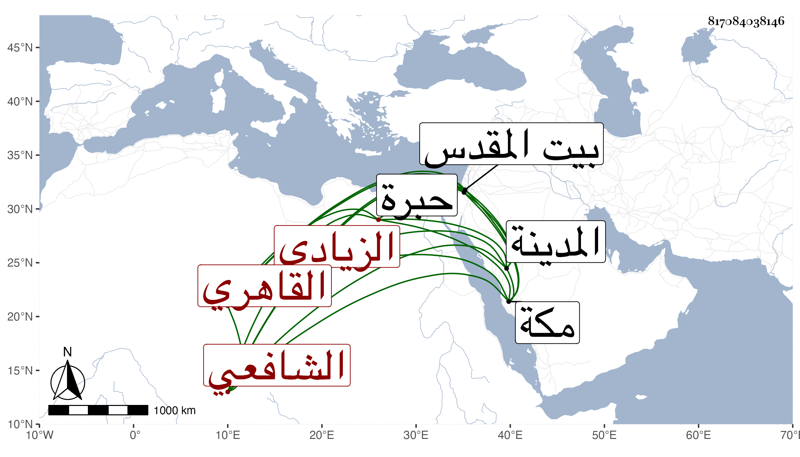

0902Sakhawi.DawLamic.ITO20230111-ara1.EIS1600.817084038146
Biography ID: 817084038146
405
محمد بن علي بن أحمد الشمس الزيادي بالتشديد القاهري الشافعي أخو أحمد الماضي وهذا أسن وأخير . ولد قبيل سنة أربعين تقريبا بالصحراء وقرأ القرآن وجوده عند الفقيه النور السنوري والعمدة والشاطبية والمنهاج . وعرض على شيخنا والقاياتي وابن الديري وحضر دروس البكري وزكريا بل والمناوي وقرأ علي في البخاري ولازمني في غيره ، وحج في البحر رفيقا لابن أبي السعود وجاور بمكة والمدينة وسمع على التقي بن فهد وغيره وكذا زار القدس والخليل وتنزل في بعض الجهات وأذن في الجمالية وغيرها وربما قرأ في الجوق ثم تركه ونعم هو .
